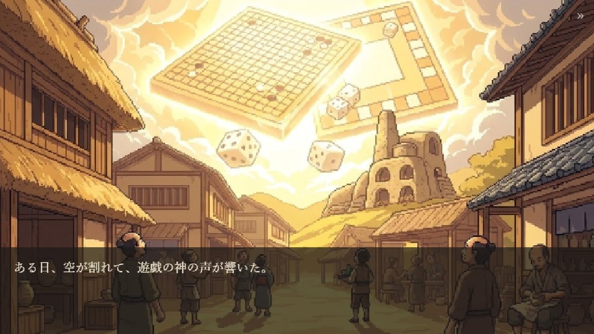
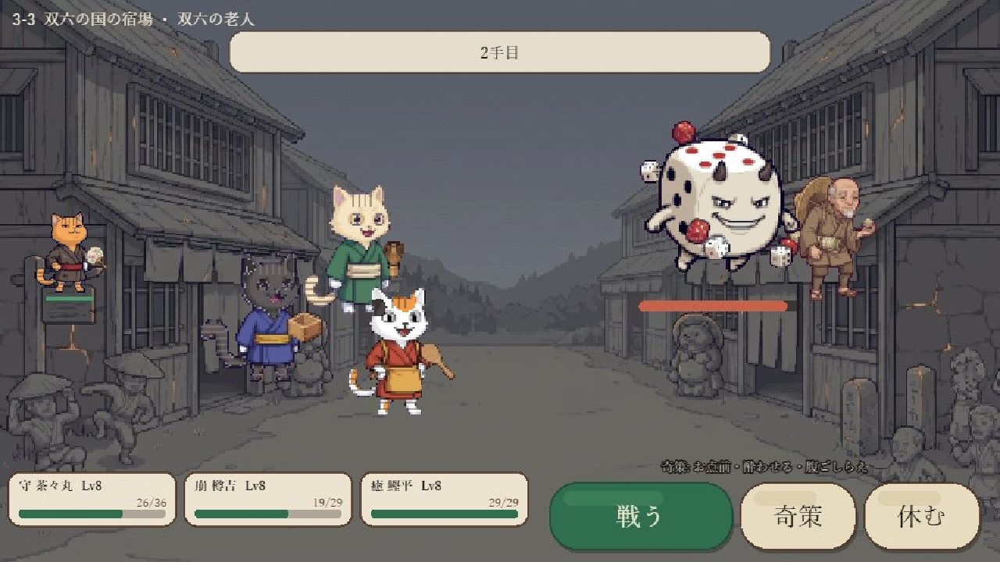
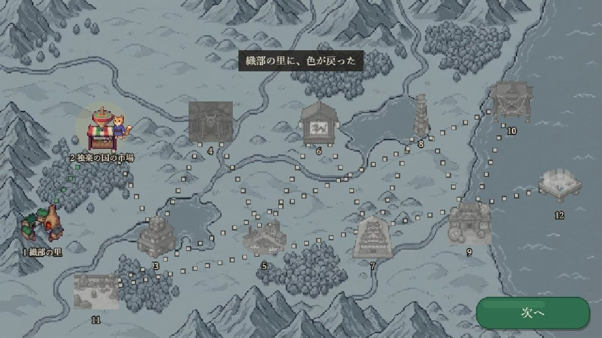

器を積んで、崩す。

YouTube Playables 向け(開発中)
織部焼の窯がある里の弟子が、窯場に残った器を積み、崩す。その崩れ方から、ケットシー(猫)が一匹生まれます。猫たちを連れて、石の世界で選ばれた者どうしの勝負を、12の章をかけて勝ち抜いていきます。
- 積んで、崩して、生まれる落ちてくる器を棚にどう乗せるか。崩れた形から、どんな猫が生まれるかが決まる。
- 一局は2〜3分どこで閉じても、続きから遊べる。
- 歪みを美しいとする灰色の世界に最初に戻ってくる色は、織部の緑。



制作記録は YouTube で、火・金・日に出しています。
YouTube で制作記録を見る猫と織部
Haus Tacorari
開発中